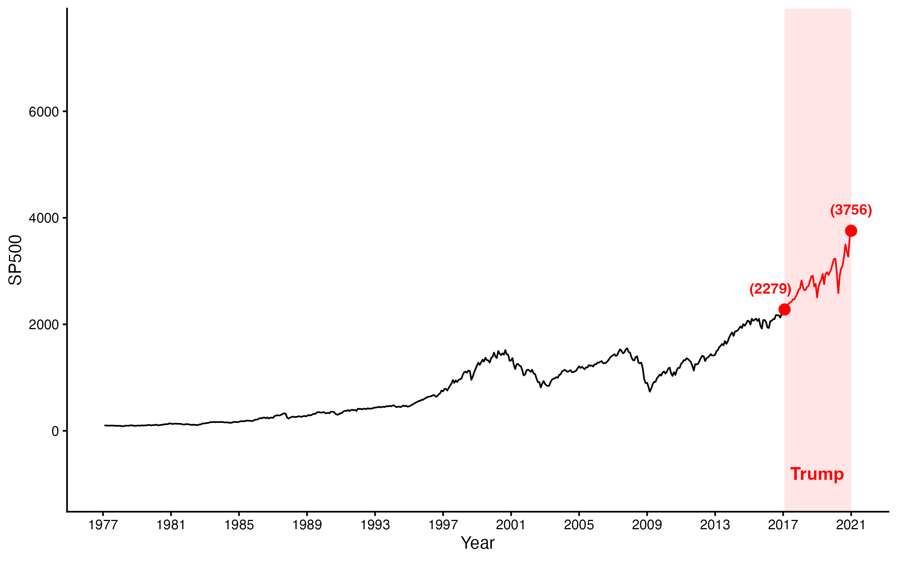
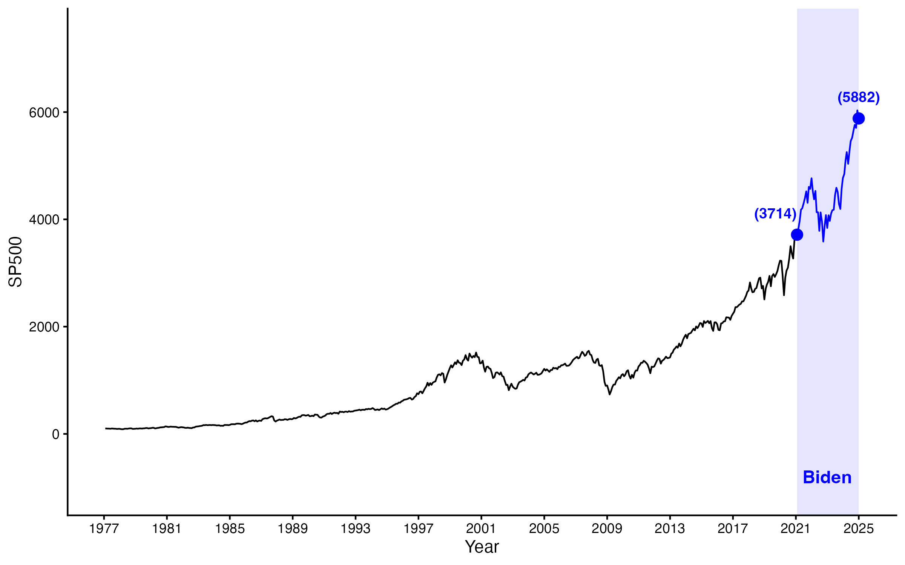

 <!DOCTYPE html>
<html>

<head>
    <title>Societal Trends</title>
    <script src="https://unpkg.com/jspsych@7.3.4"></script>
    <script src="https://unpkg.com/@jspsych/plugin-html-keyboard-response@1.1.3"></script>
    <script src="https://unpkg.com/@jspsych/plugin-image-keyboard-response@1.1.3"></script>
    <script src="https://unpkg.com/@jspsych/plugin-html-button-response@1.1.3"></script>
    <script src="https://unpkg.com/@jspsych/plugin-html-slider-response@1.1.3"></script>
    <script src="https://unpkg.com/@jspsych/plugin-preload@1.1.3"></script>
    <script src="https://unpkg.com/@jspsych/plugin-survey-multi-choice@1.1.3"></script>
    <script src="https://unpkg.com/@jspsych/plugin-survey-text@1.1.3"></script>
    <script src="https://unpkg.com/@jspsych/plugin-survey@1.0.1"></script>
    <link rel="stylesheet" href="https://unpkg.com/@jspsych/plugin-survey@1.0.1/css/survey.css">
    <link href="https://unpkg.com/jspsych@7.3.4/css/jspsych.css" rel="stylesheet" type="text/css" />
    <script src="https://unpkg.com/@jspsych-contrib/plugin-pipe"></script>

</head>

<body></body>
<script>
  /* initialize jsPsych */
  var jsPsych = initJsPsych({
  on_finish: function() {
    window.location = "https://app.prolific.co/submissions/complete?cc=C1KY2KUR";
  }
});          

  /* Capture info from Prolific */
  var subject_id = jsPsych.data.getURLVariable('PROLIFIC_PID');
  var study_id = jsPsych.data.getURLVariable('STUDY_ID');
  var session_id = jsPsych.data.getURLVariable('SESSION_ID');

  // If not running on Prolific (e.g., for testing locally), generate a random ID
  if (subject_id == null) {
    subject_id = jsPsych.randomization.randomID(10);
    study_id = "local_test";
    session_id = "local_test";
  }

  // Add Prolific info to every data record
  jsPsych.data.addProperties({
    subject_id: subject_id,
    study_id: study_id,
    session_id: session_id
  });

  /* Generate a filename */
  const filename = `${subject_id}.csv`;

/* Consent Form */
var consentForm = {
  type: jsPsychHtmlButtonResponse,
  stimulus: `
    <div style="text-align: left; max-width: 800px; margin: auto;">
      <h2>OCCIDENTAL COLLEGE</h2>
      <h3>INFORMED CONSENT FORM: ONLINE ADULT PARTICIPANTS</h3>
      <h4>Title of Study: Thinking about Trends in Society</h4>
      <h4>Principal Investigator: Dr. Jamie Amemiya</h4>
      
      <p>
        You are invited to participate in a research study conducted by Dr. Jamie Amemiya, 
        a faculty member in the Department of Psychology at Occidental College in Los Angeles, CA. 
        You must be at least 18 years of age to consent to participation in this study. 
        Please read this form and ask any questions you may have before agreeing to participate in the study.
      </p>

      <h4>PURPOSE OF STUDY</h4>
      <p>
        The purpose of this study is to examine how adults think about different societal trends, 
        for example economic trends. You will be shown data on trends over time and asked about your 
        opinions, knowledge, and overall evaluations of these trends. Your responses will be compared 
        with other adults to understand how thinking about societal trends differs by factors such as 
        political affiliation. 
      </p>
      <p>
        De-identified data collected from this study will be used for academic publication, academic 
        conferences, educational presentations, and may be posted publicly on data storage platforms 
        such as Open Science Framework and GitHub. Data derived from this study may be held for future 
        use, stored and re-analyzed, or combined with other data at a later date.
      </p>

      <h4>PROCEDURES</h4>
      <p>
        If you agree to be in this study, you will be asked a series of questions about societal patterns, 
        such as economic trends. You are free to skip any questions you would like. We wish to emphasize 
        that there are no right or wrong answers and that we appreciate your honest responses. 
      </p>
      <p>
        We may collect basic demographic information, including your age, gender, political affiliation, 
        and racial-ethnic background. Participation should take about 5 minutes. 
        This study may contain attention checks to ensure that participants are finishing the tasks 
        honestly and completely. As long as you read the instructions and complete the tasks, your 
        response will be approved.
      </p>

      <h4>VOLUNTARY PARTICIPATION</h4>
      <p>
        Participation in this study is voluntary. You may skip any questions that you 
        do not want to answer or stop participating at any time. You are free to withdraw from the study 
        at any time without penalty, with no loss of benefits to which you were otherwise entitled.
      </p>

      <h4>RISKS AND BENEFITS</h4>
      <p>
        There are no anticipated risks or discomforts to your participation in this study other than 
        those encountered in daily life. Although you will receive no direct benefits for participation 
        in this study, it may make you more aware of how knowledge is discovered in psychology and help 
        the investigator better understand how people think about societal patterns, like economic trends.
      </p>

      <h4>CONFIDENTIALITY</h4>
      <p>
        Your Prolific ID will be used to distribute payment to you but will not be stored with the research 
        data we collect from you. Please be aware that your Prolific ID can potentially be linked to information about 
        you on your Prolific public profile page, depending on the settings you have for your profile. We will not be 
        accessing any personally identifying information about you that you may have put on your public profile page.
      </p>
      <p>
        Confidentiality of your research records will be strictly maintained by de-identifying the stored 
        data and electronically deleting identifying information. The de-identified data from the study 
        will be kept at least until 3 years after publication. Identifiable data will never 
        be shared outside the research team.
      </p>

      <h4>COMPENSATION</h4>
      <p>
        You will be compensated at a rate of <strong>$12.00/hour</strong>.
      </p>

      <h4>CONTACT INFORMATION</h4>
      <p>
        If you have any questions or concerns about the research, you can contact Dr. Jamie Amemiya at 
        <a href="mailto:amemiya@oxy.edu">amemiya@oxy.edu</a>.
      </p>
      <p>
        If you have any questions or concerns regarding your rights as a subject in this study, you may 
        contact the Institutional Review Board Office at Occidental College in Los Angeles, CA, 90041 at 
        <a href="mailto:hsrrc@oxy.edu">hsrrc@oxy.edu</a>.
      </p>

      <h4>CONSENT STATEMENT</h4>
      <p>
        I am at least eighteen years of age. I have read this form and the research 
        study has been explained to me. I am fully aware of the nature and extent of my participation in 
        this research project and the possible risks as outlined above. I understand that I may withdraw 
        my participation in this project at any time without prejudice or penalty of any kind.
      </p>
      <p>
        I hereby agree to participate in this research project.
      </p>
      <p>
        <strong>Please print or save a copy of this page for your records.</strong>
      </p>
    </div>
  `,
  choices: ["I Agree", "I Do Not Agree"],
  on_finish: function(data) {
    if (data.response == 1) { // If "I Do Not Agree" is chosen
      jsPsych.endExperiment("You have chosen not to participate. Thank you.");
    }
  }
};


/* Welcome / Purpose Page */
const welcomePage = {
  type: jsPsychHtmlButtonResponse,
  stimulus: `<div style="width:800px; text-align:left;">
      <h2>Welcome!</h2>
      <p>Thank you for participating in this study. The purpose of this research is to better understand 
      how people think about the economy.</p>
      
      <p>During this study, you will read about an economic performance metric, the S&P 500, and answer some questions about your views.</p>
      
      <p>If you are ready to begin, please click the button below.</p>
  </div>`,
  choices: ['Start Study']
};


/* S&P 500 Introduction*/

const SP500intro = {
    type: jsPsychHtmlButtonResponse,
    stimulus: `<div style="width:800px;">
        <p>The S&P 500 is a list of the 500 biggest U.S. companies, showing how well the stock market is doing
        overall. <strong>Higher S&P is better</strong> because it means companies are doing well, which can help the
        economy grow. </p> 

        <p>Please indicate which is better for the economy:</p>
        <div style="margin-top: 20px; text-align: center;">
            <label><input type="radio" name="comp_check" value="higher"> Higher S&P 500 values</label><br>
            <label><input type="radio" name="comp_check" value="lower"> Lower S&P 500 values</label>
        </div>
    </div>`,
    choices: ['Continue'],
    button_html: '<button class="jspsych-btn" id="continue-btn" disabled>%choice%</button>',
    on_load: function () {
        const radios = document.getElementsByName('comp_check');
        const continueBtn = document.getElementById('continue-btn');

        radios.forEach(radio => {
            radio.addEventListener('change', () => {
                continueBtn.disabled = false;
            });
        });

        // When "Continue" is clicked, save the response to jsPsych.data
        continueBtn.addEventListener('click', () => {
            const selected = Array.from(radios).find(r => r.checked)?.value || null;
            jsPsych.data.get().addToLast({ comp_check: selected });
            console.log("Saved comprehension check: ", selected);
        });
    }
};


/* Initial Trump Question*/
var trump_previous;  // Global variable to store Trump slider value
const startTrumpQuestion = {
    type: jsPsychHtmlButtonResponse,
    stimulus: function () {
        // Use previously stored value, or default to 5 if not set yet
        trump_previous = trump_previous || 5; // ensure it's always set
        let start_value = trump_previous;
        return `
            <div style="width:1000px;">        
                <p>How good do you believe <strong><span style="color:red;">Donald Trump (R)</span></strong> was for the S&P 500 when he was president from <strong>2017-2021</strong>?</p>
                <div style='margin-top: 20px;'>
                    <label for="slider">How Good Overall: <span id="slider-value">${start_value}</span></label>
                    <div style="display: flex; justify-content: space-between; margin-top: 10px;">
                        <span>0 = Really Bad</span>
                        <input type="range" min="0" max="10" step="1" value="${start_value}" class="jspsych-slider" id="slider" style="width: 80%; height: 2em;">
                        <span>10 = Really Good</span>
                    </div>
                </div>
            </div>
        `;
    },
    choices: ['Continue'],
    button_html: '<button class="jspsych-btn" id="continue-btn">%choice%</button>', // enable immediately
    on_load: function () {
        var slider = document.getElementById('slider');
        var sliderValue = document.getElementById('slider-value');

        if (slider) {
            slider.oninput = function () {
                sliderValue.innerHTML = slider.value;
                trump_previous = Number(slider.value);  // save as number
            };
        }
    },
    on_finish: function (data) {
        // always assign current slider value
        var slider = document.getElementById('slider');
        data.slider_value = slider ? Number(slider.value) : trump_previous;
        console.log("startTrump slider value stored: ", data.slider_value);
    }
};


/* Initial Biden Question */
var previous_biden;  // Global variable to store Biden slider value

const startBidenQuestion = {
    type: jsPsychHtmlButtonResponse,
    stimulus: function () {
        // Ensure previous_biden is set (default = 5)
        previous_biden = previous_biden || 5;
        let start_value = previous_biden;
        return `
            <div style="width:1000px;">
                <p>How good do you believe <strong><span style="color:blue;">Joe Biden (D)</span></strong> was for the S&P 500 when he was president from <strong>2021-2025</strong>?</p>
                <div style='margin-top: 20px;'>
                    <label for="slider">How Good Overall: <span id="slider-value">${start_value}</span></label>
                    <div style="display: flex; justify-content: space-between; margin-top: 10px;">
                        <span>0 = Really Bad</span>
                        <input type="range" min="0" max="10" step="1" value="${start_value}" 
                            class="jspsych-slider" id="slider" style="width: 80%; height: 2em;">
                        <span>10 = Really Good</span>
                    </div>
                </div>
            </div>
        `;
    },
    choices: ['Continue'],
    button_html: '<button class="jspsych-btn" id="continue-btn">%choice%</button>', // enable immediately
    on_load: function () {
        var slider = document.getElementById('slider');
        var sliderValue = document.getElementById('slider-value');

        if (slider) {
            slider.oninput = function () {
                sliderValue.innerHTML = slider.value;
                previous_biden = Number(slider.value);  // save as number
            };
        }
    },
    on_finish: function (data) {
        // Always get the current slider value, even if user didn’t move it
        var slider = document.getElementById('slider');
        data.slider_value = slider ? Number(slider.value) : previous_biden;
        console.log("startBiden slider value stored: ", data.slider_value);
    }
};


/* SP500 Trump graph baseline */
const trumpBLSP500 = {
  type: jsPsychHtmlButtonResponse,
  stimulus: function () {
    return `<div style="width:1000px;">
        <p>At the beginning of <strong><span style="color:red;">Donald Trump's (R)</span></strong> presidency in 2017, 
        the S&P 500 was <strong>2279.</strong></p>
        <p>By the end of his presidency, the S&P 500 was <strong>3756.</strong></p>
        <p>Please type the <u>starting</u> and <u>ending</u> values of the S&P 500 during Trump's presidency in the boxes below:</p>
        <div style="margin-top: 20px; text-align:center;">
          <input type="number" id="trump-start" placeholder="Start value" style="font-size: 1.2em; width: 150px; text-align: center; margin-right: 20px;">
          <input type="number" id="trump-end" placeholder="End value" style="font-size: 1.2em; width: 150px; text-align: center;">
        </div>
        <div style='margin-top: 40px;'></div>
        
    </div>`;
  },
  choices: ['Continue'],
  button_html: '<button class="jspsych-btn" id="continue-btn" disabled>%choice%</button>',
  on_load: function () {
    var startInput = document.getElementById('trump-start');
    var endInput = document.getElementById('trump-end');
    var continueBtn = document.getElementById('continue-btn');

    function checkInputs() {
      if (startInput.value.trim() === "2279" && endInput.value.trim() === "3756") {
        continueBtn.disabled = false;
      } else {
        continueBtn.disabled = true;
      }
    }

    startInput.addEventListener('input', checkInputs);
    endInput.addEventListener('input', checkInputs);

    // Store current values in data on button click
    continueBtn.addEventListener('click', function () {
      jsPsych.data.get().addToLast({ 
        trump_start_value: Number(startInput.value),
        trump_end_value: Number(endInput.value)
      });
    });
  },
  on_finish: function (data) {
    // Fallback in case button listener missed it
    var startInput = document.getElementById('trump-start');
    var endInput = document.getElementById('trump-end');
    data.trump_start_value = startInput ? Number(startInput.value) : data.trump_start_value;
    data.trump_end_value = endInput ? Number(endInput.value) : data.trump_end_value;
    console.log("Trump values stored: ", data.trump_start_value, data.trump_end_value);
  }
};


/* SP500 Biden graph baseline */
const bidenBLSP500 = {
  type: jsPsychHtmlButtonResponse,
  stimulus: function () {
    return `<div style="width:1000px;">
        <p>At the beginning of <strong><span style="color:blue;">Joe Biden's (D)</span></strong> presidency in 2021, 
        the S&P 500 was <strong>3714.</strong></p>
        <p>By the end of his presidency, the S&P 500 was <strong>5882.</strong></p>
        <p>Please type the <u>starting</u> and <u>ending</u> values of the S&P 500 during Biden's presidency in the boxes below:</p>
        <div style="margin-top: 20px; text-align:center;">
          <input type="number" id="biden-start" placeholder="Start value" style="font-size: 1.2em; width: 150px; text-align: center; margin-right: 20px;">
          <input type="number" id="biden-end" placeholder="End value" style="font-size: 1.2em; width: 150px; text-align: center;">
        </div>
        <div style='margin-top: 40px;'></div>
        
    </div>`;
  },
  choices: ['Continue'],
  button_html: '<button class="jspsych-btn" id="continue-btn" disabled>%choice%</button>',
  on_load: function () {
    var startInput = document.getElementById('biden-start');
    var endInput = document.getElementById('biden-end');
    var continueBtn = document.getElementById('continue-btn');

    function checkInputs() {
      if (startInput.value.trim() === "3714" && endInput.value.trim() === "5882") {
        continueBtn.disabled = false;
      } else {
        continueBtn.disabled = true;
      }
    }

    startInput.addEventListener('input', checkInputs);
    endInput.addEventListener('input', checkInputs);

    // Save current values when the button is clicked
    continueBtn.addEventListener('click', function () {
      jsPsych.data.get().addToLast({ 
        biden_start_value: Number(startInput.value),
        biden_end_value: Number(endInput.value)
      });
    });
  },
  on_finish: function (data) {
    // Fallback in case button listener missed it
    var startInput = document.getElementById('biden-start');
    var endInput = document.getElementById('biden-end');
    data.biden_start_value = startInput ? Number(startInput.value) : data.biden_start_value;
    data.biden_end_value = endInput ? Number(endInput.value) : data.biden_end_value;
    console.log("Biden values stored: ", data.biden_start_value, data.biden_end_value);
  }
};


    /* counterfactuals */

    
/* SP500 Trump counterfactual */
const trumpCounterSP500 = {
  type: jsPsychHtmlButtonResponse,
  stimulus: function () {
    return `<div style="width:1000px;">
        <p>At the beginning of <strong><span style="color:red;">Donald Trump's (R)</span></strong> presidency in 2017, 
        the S&P 500 was <strong>2279</strong> and by the end it was <strong>3756.</strong></p>
        
        <p>Suppose that, instead of <strong><span style="color:red;">Donald Trump (R)</span></strong>, 
        <strong><i><span style="color:blue;">the Democratic candidate (Hillary Clinton)</span></i></strong> 
        had been elected president instead from 2017–2021.  
        What do you think the S&P would have been by the end of that presidency?</p>
        
        <div style="margin-top: 20px; text-align:center;">
          <input type="number" id="trump-counter-input" placeholder="Enter value" 
                 style="font-size: 1.2em; width: 180px; text-align: center;">
        </div>
        
        <div style='margin-top: 40px;'></div>
        
    </div>`;
  },
  choices: ['Continue'],
  button_html: '<button class="jspsych-btn" id="continue-btn" disabled>%choice%</button>',
  on_load: function () {
    var input = document.getElementById('trump-counter-input');
    var continueBtn = document.getElementById('continue-btn');

    // Enable button once something is typed
    input.addEventListener('input', function () {
      continueBtn.disabled = input.value.trim() === "";
    });

    // Range check when clicking continue
    continueBtn.addEventListener('click', function (e) {
      const value = parseInt(input.value);
      if (value < 1000 || value > 9999 || isNaN(value)) {
        e.stopImmediatePropagation(); // prevent jsPsych from finishing trial
        alert("Please enter a value between 1000 and 9999.");
      }
    });

    // Save value immediately on click to ensure it's in data
    continueBtn.addEventListener('click', function () {
      jsPsych.data.get().addToLast({ 
        trump_counter_value: Number(input.value)
      });
    });
  },
  on_finish: function (data) {
    // Fallback in case button listener missed it
    var input = document.getElementById('trump-counter-input');
    data.trump_counter_value = input ? Number(input.value) : data.trump_counter_value;
    console.log("Trump counterfactual input stored: ", data.trump_counter_value);
  }
};


/* SP500 Biden counterfactual */
const bidenCounterSP500 = {
  type: jsPsychHtmlButtonResponse,
  stimulus: function () {
    return `<div style="width:1000px;">
        <p>At the beginning of <strong><span style="color:blue;">Joe Biden's (D)</span></strong> presidency in 2021, 
        the S&P 500 was <strong>3714</strong> and by the end it was <strong>5882.</strong></p>
        
        <p>Suppose that, instead of <strong><span style="color:blue;">Joe Biden (D)</span></strong>, 
        <strong><i><span style="color:red;">the Republican candidate (Donald Trump)</span></i></strong> 
        had been elected president instead from 2021–2025.  
        What do you think the S&P would have been by the end of that presidency?</p>
        
        <div style="margin-top: 20px; text-align:center;">
          <input type="number" id="biden-counter-input" placeholder="Enter value" 
                 style="font-size: 1.2em; width: 180px; text-align: center;">
        </div>
        
        <div style='margin-top: 40px;'></div>
        
    </div>`;
  },
  choices: ['Continue'],
  button_html: '<button class="jspsych-btn" id="continue-btn" disabled>%choice%</button>',
  on_load: function () {
    var input = document.getElementById('biden-counter-input');
    var continueBtn = document.getElementById('continue-btn');

    // Enable button once something is typed
    input.addEventListener('input', function () {
      continueBtn.disabled = input.value.trim() === "";
    });

    // Range check and save value when clicking continue
    continueBtn.addEventListener('click', function (e) {
      const value = Number(input.value);
      if (isNaN(value) || value < 1000 || value > 9999) {
        e.stopImmediatePropagation(); // prevent trial from ending
        alert("Please enter a value between 1000 and 9999.");
      } else {
        // Save value immediately
        jsPsych.data.get().addToLast({
          biden_counter_value: value
        });
      }
    });
  },
  on_finish: function (data) {
    // Fallback in case button listener missed it
    var input = document.getElementById('biden-counter-input');
    data.biden_counter_value = input ? Number(input.value) : data.biden_counter_value;
    console.log("Biden counterfactual input stored: ", data.biden_counter_value);
  }
};


/* End Trump Question */
const endTrumpQuestion = {
    type: jsPsychHtmlButtonResponse,
    stimulus: function () {
        // Ensure trump_previous is set (default = 5)
        trump_previous = trump_previous || 5;
        let start_value = trump_previous;
        return `
            <div style="width:1000px;">
                <p>Earlier, you indicated that you believed <strong><span style="color:red;">Donald Trump (R)</span></strong> was a 
                <strong>${start_value}</strong> for the S&P 500 during his presidency.</p>
                <p>Now, how good do you believe he was for the S&P 500 overall?</p>
                <div style='margin-top: 20px;'>
                    <label for="slider">Your judgment: <span id="slider-value">${start_value}</span></label>
                    <div style="display: flex; justify-content: space-between; margin-top: 10px;">
                        <span>0 = Really Bad</span>
                        <input type="range" min="0" max="10" step="1" value="${start_value}" 
                            class="jspsych-slider" id="slider" style="width: 80%; height: 2em;">
                        <span>10 = Really Good</span>
                    </div>
                </div>
                <p style="font-size:0.9em; margin-top:10px;">
                    (The slider is initialized at your earlier response: ${start_value})
                </p>
            </div>
        `;
    },
    choices: ['Continue'],
    button_html: '<button class="jspsych-btn" id="continue-btn">%choice%</button>', // enabled immediately
    on_load: function () {
        var slider = document.getElementById('slider');
        var sliderValue = document.getElementById('slider-value');

        if (slider) {
            slider.oninput = function () {
                sliderValue.innerHTML = slider.value;
                trump_previous = Number(slider.value);  // save as number
            };
        }
    },
    on_finish: function (data) {
        // Always get current slider value, fallback to trump_previous
        var slider = document.getElementById('slider');
        data.slider_value = slider ? Number(slider.value) : trump_previous;
        console.log("endTrump slider value stored: ", data.slider_value);
    }
};


/* End Biden Question */
const endBidenQuestion = {
    type: jsPsychHtmlButtonResponse,
    stimulus: function () {
        // Ensure previous_biden is set (default = 5)
        previous_biden = previous_biden || 5;
        let start_value = previous_biden;
        return `
            <div style="width:1000px;">
                <p>Earlier, you indicated that you believed <strong><span style="color:blue;">Joe Biden (D)</span></strong> was a 
                <strong>${start_value}</strong> for the S&P 500 during his presidency.</p>
                <p>Now, how good do you believe he was for the S&P 500 overall?</p>
                <div style='margin-top: 20px;'>
                    <label for="slider">Your judgment: <span id="slider-value">${start_value}</span></label>
                    <div style="display: flex; justify-content: space-between; margin-top: 10px;">
                        <span>0 = Really Bad</span>
                        <input type="range" min="0" max="10" step="1" value="${start_value}" 
                            class="jspsych-slider" id="slider" style="width: 80%; height: 2em;">
                        <span>10 = Really Good</span>
                    </div>
                </div>
                <p style="font-size:0.9em; margin-top:10px;">
                    (The slider is initialized at your earlier response: ${start_value})
                </p>
            </div>
        `;
    },
    choices: ['Continue'],
    button_html: '<button class="jspsych-btn" id="continue-btn">%choice%</button>', // enabled immediately
    on_load: function () {
        var slider = document.getElementById('slider');
        var sliderValue = document.getElementById('slider-value');

        if (slider) {
            slider.oninput = function () {
                sliderValue.innerHTML = slider.value;
                previous_biden = Number(slider.value);  // save as number
            };
        }
    },
    on_finish: function (data) {
        // Always get current slider value, fallback to previous_biden
        var slider = document.getElementById('slider');
        data.slider_value = slider ? Number(slider.value) : previous_biden;
        console.log("endBiden slider value stored: ", data.slider_value);
    }
};


/* Demographic questionnaire */
const endquestionnaire = {
    type: jsPsychSurvey,
    survey_json: {
        elements: [
            {
                type: 'text',
                title: "What is your age (in years)?",
                name: 'age',
                isRequired: false,
            },
            {
                type: 'text',
                title: "What gender do you identify as?",
                name: 'gender',
                isRequired: false,
            },
            {
                type: 'text',
                title: "What race(s) do you identify as?",
                name: 'race',
                isRequired: false,
            },
            {
                type: 'radiogroup',
                title: "What is your highest level of education?",
                name: 'edu',
                isRequired: false,
                showOtherItem: true,
                otherText: 'Prefer to self-describe',
                choices: [
                    'Less than a high school diploma',
                    'High school diploma',
                    "Associate's degree",
                    "Bachelor's degree (B.A., B.S.)",
                    "Master's degree (M.A., M.S.)",
                    "Professional degree (M.D., Ph.D., J.D., etc.)",
                ]
            },
            {
                type: 'radiogroup',
                title: "What is your political orientation?",
                name: 'polorientation',
                isRequired: false,
                choices: [
                    'Very liberal',
                    'Liberal',
                    'Slightly liberal',
                    'Moderate/Middle of the road',
                    'Slightly conservative',
                    'Conservative',
                    'Very Conservative',
                    "Haven't thought about it much"
                ]
            },
            {
                type: 'radiogroup',
                title: "What is your political party affiliation",
                name: 'polpartyaff',
                isRequired: false,
                showOtherItem: true,
                otherText: 'Other (please specify)',
                choices: [
                    'Democrat',
                    'Republican',
                    'Independent',
                    'Libertarian',
                    'Green Party',
                    'Constitution Party',
                ]
            },
            {
                type: 'radiogroup',
                title: "Who did you vote for in the 2024 U.S. Presidential Election?",
                name: 'vote',
                isRequired: false,
                showOtherItem: true,
                otherText: 'Other (please specify)',
                choices: [
                    'Kamala Harris (Democratic Party)',
                    'Donald Trump (Republican Party)',
                    'Chase Oliver (Libertarian Party)',
                    'Jill Stein (Green Party)',
                    'Did not vote'
                ]
            }
        ]
    },
    on_load: function () {
        // Force scroll to top when the page loads
        window.scrollTo(0, 0);
    },
    on_finish: function (data) {
        var checkResponses = function (responseKey) {
            var response = data.response[responseKey];
            if (!response) {
                var leaveBlank = confirm("You left this question blank. Are you sure you want to leave it blank?");
                if (!leaveBlank) {
                    return false;
                }
            }
            return true;
        };
        if (!checkResponses('age') ||
            !checkResponses('gender') ||
            !checkResponses('race') ||
            !checkResponses('edu') ||
            !checkResponses('polorientation') ||
            !checkResponses('polpartyaff') ||
            !checkResponses('vote')) {
            jsPsych.endCurrentTimeline();
            timeline.push(endquestionnaire);
            jsPsych.run(timeline);
        }
    }
};


    const end = {
        type: jsPsychHtmlButtonResponse,
        stimulus: `<div style="width:1000px;">
             <p>You've reached the end of the survey. Thank you for participating in our research!</p>
         `,
        choices: ["End"]
    };


/* Condition 1 - Baseline*/
var cond1_timeline = [];
cond1_timeline.push(consentForm);
cond1_timeline.push(welcomePage);
cond1_timeline.push(SP500intro);
cond1_timeline.push(startTrumpQuestion);
cond1_timeline.push(startBidenQuestion);
cond1_timeline.push(trumpBLSP500);
cond1_timeline.push(endTrumpQuestion);
cond1_timeline.push(bidenBLSP500);
cond1_timeline.push(endBidenQuestion);
cond1_timeline.push(endquestionnaire);
cond1_timeline.push(end);

/* Condition 2 - Counterfactual*/
var cond2_timeline = [];
cond2_timeline.push(consentForm);
cond2_timeline.push(welcomePage);
cond2_timeline.push(SP500intro);
cond2_timeline.push(startTrumpQuestion);
cond2_timeline.push(startBidenQuestion);
cond2_timeline.push(trumpBLSP500);
cond2_timeline.push(trumpCounterSP500);
cond2_timeline.push(endTrumpQuestion);
cond2_timeline.push(bidenBLSP500);
cond2_timeline.push(bidenCounterSP500);
cond2_timeline.push(endBidenQuestion);
cond2_timeline.push(endquestionnaire);
cond2_timeline.push(end);


// Everyone assigned to cf condition
var selectedTimeline = cond2_timeline;
var condition = "cf";

// Everyone assigned to cf condition
// var selectedTimeline = cond1_timeline;
// var condition = "baseline";


// Randomly select one of the conditions
// var selectedTimeline = jsPsych.randomization.sampleWithoutReplacement([cond1_timeline, cond2_timeline], 1)[0];

// Define the conditions
// var condition;
//    if (selectedTimeline === cond1_timeline) {
//        condition = "baseline";
//    }else if (selectedTimeline === cond2_timeline) {
//        condition = "cf"
//    }

// Store the condition in jsPsych's data
    jsPsych.data.addProperties({
        condition: condition
    });

// Save data at the end of the experiment (make sure to update experiment_id)
              const save_data = {
                type: jsPsychPipe,
                action: "save",
                experiment_id: "91RrxnLfecUZ",
                filename: filename,
                data_string: ()=>jsPsych.data.get().csv()
              };

// Add save_data to the timeline so it runs at the end
selectedTimeline.push(save_data);

// Run the selected timeline
   jsPsych.run(selectedTimeline);

</script>

</html>